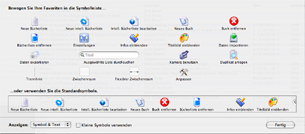

Symbolleiste
Die obere Leiste, auf der Symbole und Text angezeigt werden, heißt
Symbolleiste. Sie haben damit einen schnelleren Zugriff auf häufig genutzte
Funktionen.

Die standardmäßig eingestellten Funktionen (von links nach rechts):
- Neue Bücherliste: Hinzufügen einer neuen Bücherliste
- Neue intell. Bücherliste: Hinzufügen einer neuen intelligenten Bücherliste
- Intell. Bücherliste bearbeiten: Einstellung der Kriterien für intelligente Bücherlisten
- Neues Buch: Hinzufügen eines neuen Bucheintrages
- Buch entfernen: Entfernen des ausgewählten Buches/der ausgewählten Bücher
- Bücherliste entfernen: Entfernen der ausgewählten Bücherliste(n)
- Infos einblenden/ausblenden: Einblenden/ausblenden des Informationsfensters des ausgewählten Buches
- Titelbild einblenden/ausblenden: Einblenden/ausblenden des Titelbildes in einem losgel östen Fenster
- Suchfeld: Suche in der ausgewählten Bücherliste nach bestimmten Kriterien (auf das Dreieck klicken, um das Suchkriterium zu ändern)
Wenn Sie mit der rechten Maustaste (optional auch CTRL und Maustaste) auf die Symbolleiste klicken, dann erhalten Sie ein Untermenü, anhand dessen Sie die Symbolleiste anpassen können. Wählen Sie den Eintrag „Symbolleiste anpassen”, um zusätzliche Funktionen zur Symbolleiste hinzuzufügen.

Weitere verfügbare Funktionen:
- Einstellungen: Öffnen des Einstellungsfensters
- Daten importieren: Aufrufen der eingestellten Import-Erweiterung
- Daten exportieren: Aufrufen der eingestellten Export-Erweiterung
- Kamera benutzen: Öffnen des Kamerafensters
- Duplikat anlegen: Anlegen einer Kopie des ausgewählten Bucheintrages
- Anpassen: Öffnen des Fensters „Symbolleiste anpassen”
Um eine Funktion zur Symbolleiste hinzuzufügen, ziehen Sie das jeweilige Symbol an die Stelle innerhalb der Symbolleiste, an der das Symbol angezeigt werden soll. Um eine Funktion aus der Symbolleiste zu entfernen, ziehen Sie das Symbol aus der Symbolleiste heraus. Das Symbol sollte sich buchstäblich in Luft auflösen. Wenn Sie die Anpassung der Symbolleiste beendet haben, klicken Sie auf die Taste „Fertig”.